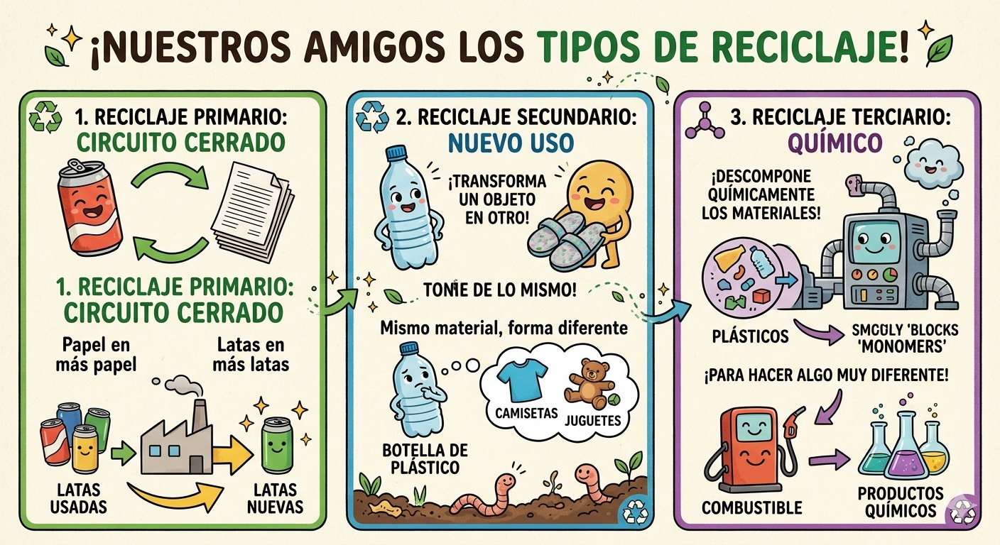

Tipos de Reciclaje
Existen varios tipos de reciclaje, cada uno enfocado en diferentes materiales. El reciclaje de papel implica la recolección y procesamiento de papel usado para crear nuevos productos de papel. El reciclaje de plástico se centra en la recolección y transformación de plásticos para fabricar nuevos objetos. El reciclaje de vidrio consiste en recolectar y fundir vidrio usado para crear nuevos productos de vidrio. El reciclaje de metal implica la recolección y fundición de metales como aluminio y acero para fabricar nuevos productos metálicos. Cada tipo de reciclaje contribuye a reducir la cantidad de residuos que terminan en vertederos y a conservar los recursos naturales.
